Una Historia De Indra
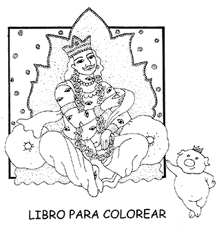 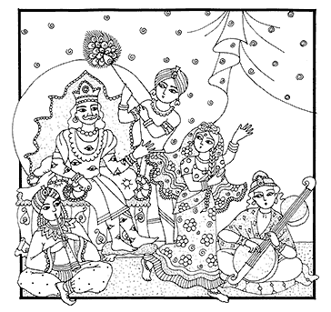 En el palacio de Indra existe una tremenda opulencia. El señor Indra esta rodeado por tantos gandarvas , cantantes profesionales, como también de las mas bellas apsaras como Durvasi y otras cuya belleza es miles de veces superior a la belleza de una mujer en la tierra. 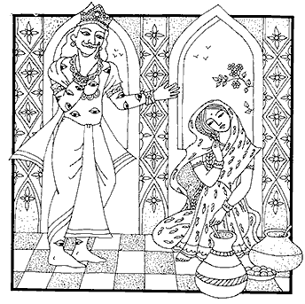 Aun así, como es la lujuria, nunca nos quiere satisfechos, siempre piensa que debería disfrutar algo más. Así aconteció que el señor Indra en un momento de su condición de querer disfrutar, echó ojo a la esposa de su maestro espiritual, Brihaspati. 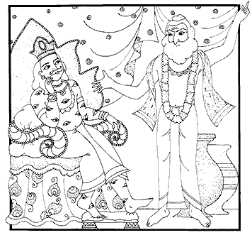 Cuando Brihaspati regresó y escuchó lo que había acontecido, se puso completamente furioso con el mismo rey del cielo y le dijo: “Tu eres un desgraciado, recibiste semejante posición de responsabilidad de gobernar las sedes del cielo, pero te conduces de una forma tan indigna que te mereces nada mejor que nacer como un chancho en la tierra.” 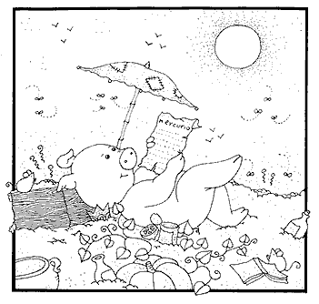 Y así, con la maldición del gran sabio Brihaspati toda la buena fortuna y la calma del señor Indra, inmediatamente se redujo a cenizas y él, dejando ese cuerpo celestial descendió hasta el planeta tierra y entró en el vientre de una marrana. Luego el señor Indra nació como el hermano de varios marranitos como un varón bien macho. 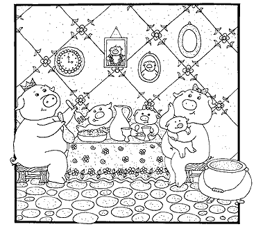 Creció rápidamente y tomó su vida de chancho muy en serio, es más, consiguió una marrana y con ella concibió sus propios marranitos también. Estaba muy apegado a su hogar, con su marrana y marranitos días y noches disfrutando, la lengua, el estomago y los genitales. 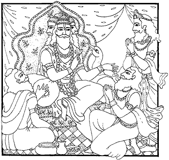 Pero mientras tanto, en el cielo hubo problemas administrativos por la ausencia del rey del cielo. Eran tantos los problemas administrativos, que la gente ya no sabía como organizar; se acercaron al señor Brahma y dijeron: “Brihaspati, condenó a Indra a ser un marrano en la tierra, y ahora no tenemos rey del cielo.” ¿No será posible que la condena sea disminuida y que Indra ya pueda volver para ejecutar su trabajo? 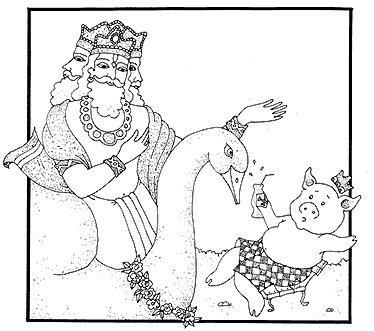 El señor Brahma viendo la calamidad por la falta de un administración, decidió usar su poder para anular el efecto de la maldición. Así descendió a la Tierra directamente a la marranera en donde vivía Indra. Brahma dijo: “¡Indra ven para acá!; el marranito se acerco y dijo: “¿sí? ¡Indra, -dijo Brahma- tienes que venir conmigo, la maldición ha sido anulada, lo necesito para administrar el cielo! 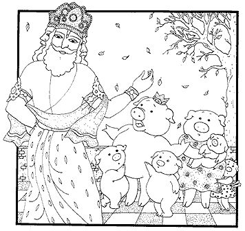 Indra miró a su marrana y a sus marranitos y dijo: “Jamás me iré, estoy muy ocupado, tengo muchos lazos familiares afectivos, ¿no ve esta belleza de familia que tengo? Lo siento mucho pero me parece una propuesta inaceptable.” Brahma dijo: “¡Pero Indra! Esta fue una maldición por tu pecado, por eso estas viviendo una vida de marrano.” Y él dijo: “¡¿y qué?!.” Indra, te apegas a lo mas bajo de gratificar a tus instintos sensoriales y no hay nada de comprensión superior. ¡No!, dijo Indra; “esta marrana y mis marranitos son mi vida, vivo para ellos, son muy importantes y muy queridos para mi.” 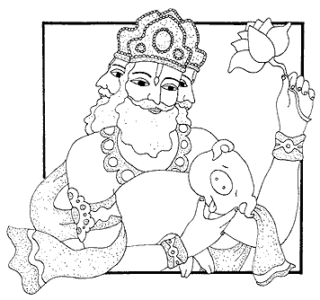 Brahma quedó consternado. ¿qué hago?, el tipo no quiere venir, se enamoró de su situación de marrano. Entonces dijo: ¡Te vienes ya por favor! ¡No, no voy, olvídese! -dijo Indra-. Entonces Brahma el creador del universo dijo: “yo aquí tengo que tomar una medida drástica;” y simplemente enfrente de Indra, tomó y mató uno de los marranitos. Indra se puso a llorar y dijo: “¿Qué haces, qué haces, porqué matas a mi hijo, usted es muy cruel, como me hace esto?” Entonces Brahma dijo: “¡Vamos! ¡No!, no iré, mira que mi familia me necesita. Brahma sin saber que hacer tomó otro marranito y lo mató también, (tomando en cuenta, que cuando el señor Brahma mata a un ser aquí en la tierra automáticamente otorga el máximo beneficio dentro de la evolución). 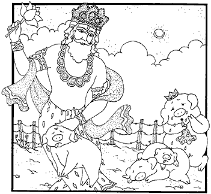 Pero el señor Indra más enojado dijo: “¡Usted es cruel, no sabe lo que es una familia amorosa estoy completamente indignado!” Así el señor Brahma le suplicaba que viniera y él no accedía. Finalmente, el señor Brahma mató todos los marranitos aún así, él no quería venir. Indra, llorando se lamentaba: “¡Yo estoy feliz con mi familia! ¿Porqué me quieres sacar de aquí?.” ¡No hay caso! Dijo Brahma y al verse sin salida tubo que matar a la marrana también. 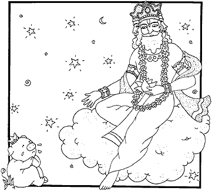 Cuando Indra vio a su marrana muerta se puso a llorar diciendo: ¿Qué has hecho? Me has destruido la familia. ¿Quién es usted?, ¡cruel! Entonces Brahma dijo: “¡te vienes ya!, pues ¡no!... ¡pues... sí! Ya no tengo nada en este mundo, lo poco que tenia se me fue.” Entonces, así cedió finalmente y el señor Brahma lo liberó de su maldición de ser marrano, y lo llevo de vuelta a Svarga: “Ahora continúe con sus deberes administrativos y no se olvide de la desgracia de ser un apegado al cuerpo de un marrano.” 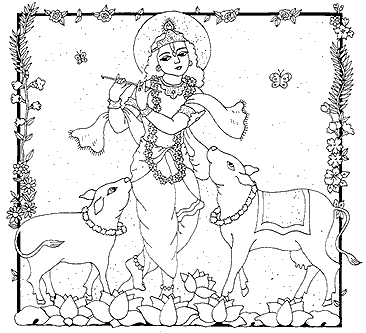 Así, la moraleja de esta historia es, que aunque uno se encuentre en la situación más desgraciada, el apego lo hace pensar a uno que así debe ser, que así debe quedarse. Uno siempre debe apegarse a la verdad suprema y dejar todos los apegos mundanos detrás. Es bien conocido que el apego en este mundo, es la causa de todo el enredo y de todas las condiciones caídas: pero, también es conocido que cuando este apego material es transferido a los devotos genuinos del Señor, los Sadhus, eso es reconocido por todas las autoridades. Entonces, este mismo apego se vuelve la causa que abre las puertas de la liberación para nosotros. Hari Bolo! |